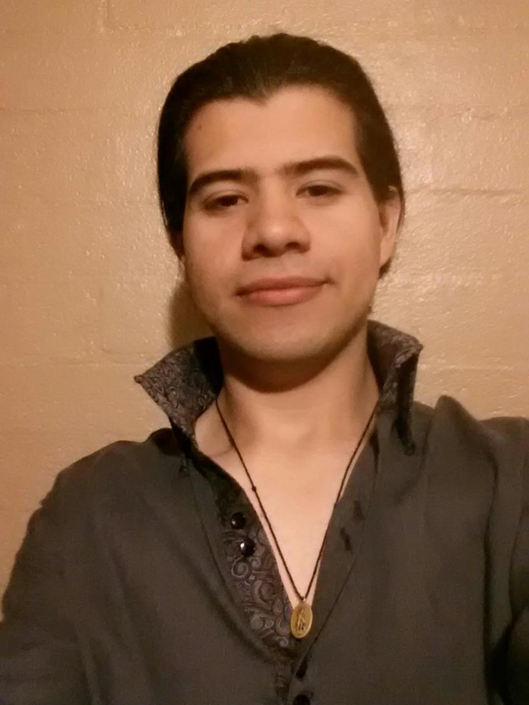

My Resume

Summary
I'm learning web development to first learn all the basics, get a nice job and then
learn Game Development, since I'm making a board game!
Education
I finished Highschool in Mexicali, Mexico and I didn't go to college, everything
that I learned was at work or courses like sales, mixology, and my insurance licence.
Work Experience
I have worked in Mexicali, Calexico, the Coachella Valley, Las Vegas, Alaska, Texas and more.
Here are my current and previous relevant positions:
Insurance Sales Agent at American Income Life.
Currently I'm selling Health & Life insurance with AIL and we specialize in union members, we make sure
that they get their supplemental benefits and guide them through registration and answer all their
questions so they are fully aware of their benefits. I do this in Spanish and English.
Onboarding Specialist at UENI
I present customers their requested website.
I show them how they are, how they work and how to edit it. I answer their questions during the
presentation and I have up to 8 calls a day via Zoom with customers.
Most of the times the customers speak english but some of them want to have the presentation in
Spanish.
Gaming Support at 5CA in the Epic Games division.
I did billingual customer support for gamers in the Epic Games area. I was in charge of helping the players
with their needs, like refunds, errors in the game, account changes and more!
Also we would play Fortnite once a week.
Skills
I'm going to list not only serious and functional skills, but also a couple of my
specialties that I'm very good at!
- Gaming: I've been participing in Super Smash Bros. tournaments since 2005!
I'm the best Melee Zelda in Mexico and the best P+ Ivysaur in Mexico.
- Mixology: I studied it in Palm Desert at the American Bartending School and
I like creating my own cocktails based on characters from videogames, anime and artists.
- Learning: I studied 2 years worth of french at Lingua Planet in Merida, Yucatan
where they teach you 2 years worth of the language in 5 days (I did pass the A1 and A2 tests at day 6)
- Teaching: I'm not a teacher per say, but I have studied the process of teaching and learning,
giving private coaching to Smash Bros players and they improved immediately!
- Coding: I'm barely learning this one since I want to be a web developer and a game developer eventually!
I'm making a board game!
Certifications
- Life and Health Insurance Agent
Other